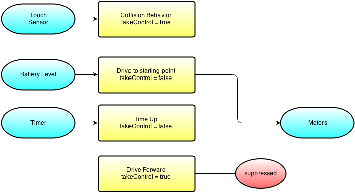

Learn how to get your Groovy on Google Glass and Android Wear!
Created by Ryan Vanderwerf / @RyanVanderwerf - ReachForce
About Me
- Chief Architect/Director @ ReachForce - we make B2 marketing data better www.reachforce.com
- Father of 2 girls under 10
- Co-Chair Austin Groovy and Grails User Group
- Co-Author of Effective Gradle Implementation Video Series on Packt
- I like to modify all the things (cars, home automation, phones, gadgets)
- Into lots of Devops/Linux stuff and AWS
What we will cover
- What is the Glass and how does it work?
- Isn't that dead?
- Layout of Glass project
- Basic Glass Constructs
- Let's build a Glass app with Groovy!
- Overview of Android Wear
- Basic Android Wear Constructs
- Android Wear useful (or must have) libraries to help you
- Let's build a Wear App with Groovy!
- Walkthrough and demo of some Groovy Android Wear Apps!
What is Google Glass?
Glass is a wearable computer on your head disguised as glasses, running Android
TI OMAP 4430 CPU Dual Core
1/2GB RAM(depends on v1/v2/3)
12GB Available Internal storage
Wifi & Bluetooth connectivity
micro usb port
720p video/5MP camera
640×360 Himax HX7309 LCoS display
3 axis gyroscope, accelerometer, and compass
Bone conduction audio transducer
Runs Android 4.4.2W
Lasts about 8 hours of snapping still, 45 min video
Isn't Glass Dead?
Nope! A couple things happened which brought about end of the public explorer program:
- TI Stopped making the processors - doh!
- Social backlast against 'Glassholes'
- Too expensive
- Remaining units held back for 'Glass At Work' Program & Warranty replacement
- Support remains - API docs, flow designer, and API still work!
- XE SDK hasn't had any real updates, assuming they are waiting for new device to see if they need changes
- Examples updated for Android Studio
- Corporate use 'Glass at Work' program still alive and well!
Is Glass Coming Back?
For business it never left. Consumer? maybe not for a while. Google has promised to build a new one since the processor was discontinued by TI, and indeed new models have recently gone through the FCC based on Intel. This will definately keep evolving for business use, for the use case for everyday for consumers? Likely not. The world wasn't socially ready for people to walk around all the time with those on.
.. but there are still a TON of good real-world uses!
So what can I do with this thing and not be a Glasshole?

Some good uses that I use it for or plan to:
- Being a totally lazy tourist and snapping lots of pics without phone out
- Fitness (Especially Biking, you can have a GPS up hands free!)
- Cooking, Doctors, Plumbers, Auto mechanics, etc. Anything dirty and you need your hands free
So what kind of apps can I make with this thing?
There are several APIs
- Mirror API (Server Side/REST Interface/Google API)
- GDK 19(4.4.2)
- Flow Designer (Tool to help visualize app flow/cards)
How the heck do I get groovy working on this thing? What do I do first?
- grooid-templates - spit out working example - this helps a lot because if you projet isn't right you waste a TON of time trying to figure out what's wrong (on any android-groovy project)
- all the Groovy goodness libs like Swissknife built in ready to go!
There is no emulator - what do I do?
- Find even new/unused pairs on ebay for 750 or used for even less. You can use ASM (Android Screen Monitor) with ADB to share what someone sees
- more people would try to make stuff if they made an emulator. My theory is they will make one after the new Intel versions come out
grooid-templates - lazybones makes Android easy!
- Uses lazybones to create Android Apps and Libs
- Mario Garcia maker of grooid-templates for mobile and libs
- I've made a fork that has glass and wear templates
- Let's see an example of setting it up and generated a Glass app!
Mirror API
Server side solution, authenicates as any other Google API on your API console
- step 1 authorize your app on your google account: https://console.developers.google.com/
- step 2 build your app! Grails 3 app would fit excellent here
- Demo Mirror API app in Java (candidate to port to Grails 3!)https://github.com/googleglass/mirror-quickstart-java
- What can it do? deliver notifications and manage contacts, mostly
GDK (Glass Development Kit) 4.4.2W
Supports API level 19 (look at SDK 19 in SDK Manager)
- Most things that have simple nav can sort of work or load
- Use the grooid-templates
- In dev mode, you can use your own voice keywords!
GDK (Glass Development Kit) 4.4.2W
Hardware you have access to:
- Voice Input https://developers.google.com/glass/develop/gdk/voice
- Touch Gestures (https://developers.google.com/glass/develop/gdk/touch) (DPAD+Gestures)
- Location and Sensors https://developers.google.com/glass/develop/gdk/location-sensors
- Sensors: On Head State, Accelerometer, Gravity, Gyroscope, Light, Compass, Rotation
- Camera https://developers.google.com/glass/develop/gdk/camera
Let's generate and demo a quick app!
Android Wear!

Now Let's Learn About Making Android Wear Groovy
- Glass most likely formed the starting point for Wear
- Watch just the first kind of Wear device
- Focused mostly on notifications as cards
- For now, needs to be tethered to mobile app for network access(changing as we speak!)
- Fun games too!
What Does A Wear App Look Like?
Looks like many things!
- A Watch Face
- Full Screen Game
- Scrolling Cards (either direction)
- Simple Cards (notification)
- The idea is to keep it simple.. there's not a lot of screen to work with!
- Recommended UI patterns here: https://developer.android.com/design/wear/patterns.html
... but Android is Hard!
In comes Groovy... we can make this easier with SwissKnife!
- Annotations and Injection kill boilerplate code!
- auto injects views on objects
- add callback methods with just an annotation
- execute elements on UI thread or background with annotation
- make anything parseable with annotation
- inject resources with @res annotations
- read intent extras with @Extra annotation
- See this great general android-swissknife tutorial http://bit.ly/1Kv7fXc
- SwissKnife source at https://github.com/Arasthel/SwissKnife
EV3Classes
Remote
- Mainly uses RMI
- RemoteEV3 is main classes to access remotely (give it IP address)
- Accessing hardware remotely pretty much as a 1:1 relation with 'Remote' in front of classs
- Wifi support most stable
- Bluetooth is working, but not considered as stable as Wifi (instructions differ per platform)
- When accessing ports, you must pass in the the proper 1 or 2 letter names (S[1-9] or letter A-F on motor ports
- Let's look at some RemoteEV3 code usage!
EV3Classes
Robotics
- The fun stuff! Doing something with all of these classes, sensors and motors
- filters - filters for sample providers such as SumFilter which takes the sum of samples over time, or MedianFilter
- geometry - geometric shape support using float co-ordinates
- localization - BeaconPoseProvider, CompassPoseProvider, MCLPoseProvider, OdometryPostProvider
- mapping - adds support for maps- Main class is EV3NavigationModel which takes Pilot, Navigator, PoseProvider, RangeScanner, FeatureFinder
EV3Classes
Robotics - continued
- navigation - classes for physically navigating the robot around - DifferentialPilot, SteeringPilot, OmniPilot
- object detection - Feature detector, Fusor detector, RangeFeature, and TouchFeature
- pathfinding - most of these use a map to determine a path for the robot to take (Dijkstra, Random, Shortest, Node)
- subsumption - Arbitrator and Behavior(Events)
EV3Classes
Utilities
- general utility classes - things like Timers, property mgt, delays, debugs
EV3Menu
This project keeps the JVM running, provides RMI services, WAP setup, UI on the front of the EV3 Brick
- Samples -> runs in separate jvm maps to /home/root/lejos/samples (Runs fine with @CompileStatic)
- Programs -> runs in separate jvm maps to /home/lejos/programs (Runs fine with @CompileStatic)
- Tools -> runs in same jvm maps to /home/root/lejos/tools (Runs Groovy fastest w/MOP)
Programming Model
Behavior Programming
- Why? Creates less spaghetti code of if-then-else statements
- Uses threads to keep multiple things going on to allow different 'behaviors' to react
- Interface uses only 3 methods - action, suppress, and takeControl
- Uses to main Interfaces - Behavior and Artibrator
Programming Model
Behavior Programming

Programming Model
Behavior Programming - continued
- Arbitrator takes over from your 3 behavior classes after they are complete
- Arbitrator regulates when behaviors become active
- Enter and escape will stop unless returnwheninactive is set upon creation
- Takes an array of behaviors
Programming Model
Behavior Programming - continued
- Simple to use, only method is start() - higher level behaviors suppress lower ones
- The array of behaviors passed in, index order determines priority of arbitrator to control behaviors
- Recommended design pattern - define boolean flag 'suppressed' for each behavior, set variable to true by supress method, test in each action method. first thing in action method is to set this to false
- Action must be coded for prompt exit from method
Programming Model
Behavior Programming - suppression
Programming Model
Let's show our example EV3BumperCarGroovy!
Advanced - Sensors and Events
Sensors

Advanced - Sensors and Events - Filters
Filters
Filters are used to alter a sample or alter the flow of samples
- Filters take a sample from a SampleProvider, modify it and then pass it on as a sample
- They are sample providers themselves
- Angles follow the right hand rule: This means that a counter clockwise rotation of a robot is measured as a positive rotation by the sensors on it
- On sensors that support multiple axes, like some gyroscopes and accelerometers, the axis order in a sample is always X,Y,Z
Advanced - Sensors and Events - Filter Sample
// get a port instance
Port port = LocalEV3.get().getPort("S2");
// Get an instance of the Ultrasonic EV3 sensor
SensorModes sensor = new EV3UltrasonicSensor(port);
// get an instance of this sensor in measurement mode
SampleProvider distance= sensor.getModeName("Distance");
// stack a filter on the sensor that gives the running average of the last 5 samples
SampleProvider average = new MeanFilter(distance, 5);
// initialise an array of floats for fetching samples
float[] sample = new float[average.sampleSize()];
// fetch a sample
average.fetchSample(sample, 0);
Advanced - Sensors and Events - Threads
Filters
Threads are spawned to facilitate:
- listeners
- regulated motors
- bluetooth
- timers
- navigation classes (Like NavPathController)
- On threads that don't need to terminate when program is done use setDaemon(true)
Advanced - Sensors and Events - Threads
Threads - example from startup menu
class Indicators extends Thread {
private boolean io = false;
public void ioActive() {
io = true;
}
public void run() {
String[] ioProgress = { ". ", " . ", " . " };
int ioIndex = 0;
boolean rewrite = false;
while (true) {
try {
if (io) {
StartUpText.g.drawString(" ", 76, 0);
ioIndex = (ioIndex + 1) % ioProgress.length;
StartUpText.g.drawString(ioProgress[ioIndex], 78, 0);
io = false;
rewrite = true;
} else if (rewrite) {
LCD.drawString(" ", 13, 0);
// invert when power is off
StartUpText.g.drawString(" BT", 82, 0, !StartUpText.btPowerOn);
StartUpText.g.refresh();
rewrite = false;
}
Thread.sleep(1000);
} catch (InterruptedException ie) {
}
}
}
}
//startup the code
Indicators ind = new Indicators();
ind.setDaemon(true);
ind.start();
Advanced - Sensors and Events
Listeners & Events
The listener thread supports Button Listeners & Sensor Port Listeners
- Button listeners are used to detect when a button is pressed, whatever your program is doing at the time
- To listen for a press of a specific button, you register as listener for that button
-
public class ListenForButtons { public static void main(String[] args) throws Exception { Button.ENTER.addButtonListener(new ButtonListener() { public void buttonPressed(Button b) { LCD.drawString("ENTER pressed", 0, 0); } public void buttonReleased(Button b) { LCD.clear(); } }); Button.ESCAPE.waitForPressAndRelease(); } }
WebRover1
Based off WebRover1 Project for NXT for International Space Apps Challenge 2013
Original version for NXT - had to rewrite a lot of it and switch to RMI for it to work with EV3
Allows you to simulate a remote rover type of device you could drive from far away like Mars or across the globe
WebRover1 - EV3
What is all if comprised of?
- Special RMIDifferentialPilot Class in the EV3Classes project
- Grails Application
- IP Camera App on Android or iOS via Wifi(Off the shelf)
- Javascript page with keybinding to actually input driving robot
WebRover1 - EV3
RMIDifferentialPilot
- RMI Enabled version of DifferentialPilot
- Pilot contains methods to control robot movements: travel forward or backward in a straight line or a circular path or rotate to a new direction
- Will only work with two independently controlled motors to steer differentially, so it can rotate within its own footprint
- Let's go over the code!
WebRover1 - EV3
Grails Application
- 2 Services, 2 Controllers, 1 GSP page
- 4 classes handle the robotics, brick abstraction, and remote comms
- Camera - using 'IP Webcam' free edition on Android
- Configure IP address of Camera and EV3 in Config.groovy before starting app
- Use the grails start/stop command interface to shut down app nicely, or you will have to keep rebooting the ev3
WebRover1 - EV3
Grails Application - Code Overview
- Camera Service - takes pictures and updates page to help you drive
- Robot Service - take input from GSP page to send commands to direct robott
- EV3Brick - abstraction class for robot, holds refs to motors
- EV3Robot - sets up comms and sensors references
- BasicRobot - bring Pilot, motors, and sensors together via RMI
- Let's look at the code and set yours up!
More Information
- leJOS Wiki: http://sourceforge.net/p/lejos/wiki/Home/
- leJOS Forums: http://www.lejos.org/forum/
- leJOS SD Card creation repo: https://sourceforge.net/p/lejos/ev3sdcard/ci/master/tree/
- leJOS EV3 Code Repo: https://sourceforge.net/p/lejos/ev3/ci/master/tree/
- Ryan's Fork w/Gradle support: https://sourceforge.net/u/ryanv78665/lejos/ci/master/tree/
- Gitub repo for WebRover1 EV3: https://github.com/rvanderwerf/webrover1
More Information - Buying parts
- You can buy random parts by the pound off ebay like this: http://goo.gl/xfkvtP (cheapest!)
- Lego Store (Many things often out of stock, poor supply chain?)
- Brickowl.com - reseller part search used and new
- Bricklink.com: http://www.bricklink.com/
- Amazon - specific parts are available there sometimes cheaper but less selection
THE END
I hope you have enjoyed the session!
Free free to contact me on twitter or google+ @RyanVanderwerf or email rvanderwerf@gmail.com